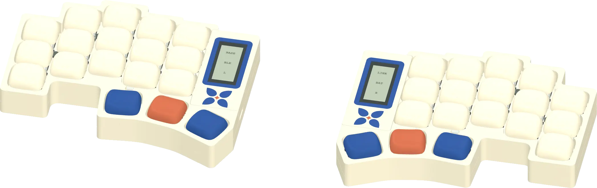
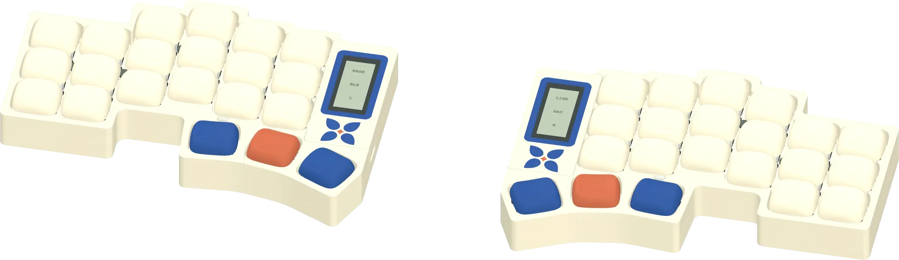
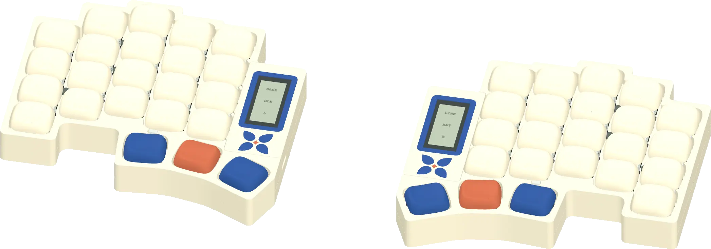
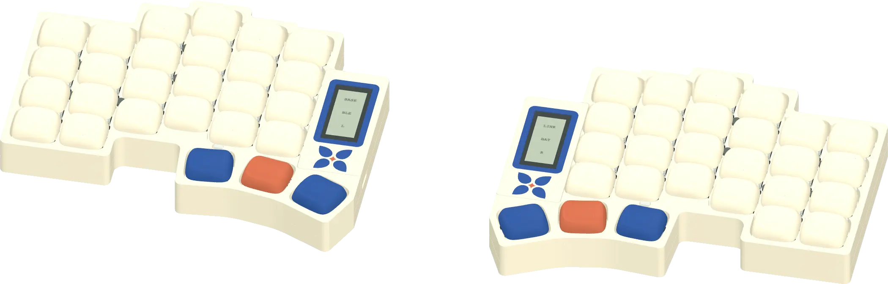

Pick your Flan.Elige tu Flan.
A low-profile wireless split keyboard, open from PCB to case. Four sizes, the same thumbs. Open one in 3D and make it yours.Un teclado dividido inalámbrico de perfil bajo, abierto del PCB a la caja. Cuatro tamaños, los mismos pulgares. Abre uno en 3D y hazlo tuyo.

Flan36Explore in 3D →Explorar en 3D →
Flan42Explore in 3D →Explorar en 3D →
Flan46Explore in 3D →Explorar en 3D →
Flan54Explore in 3D →Explorar en 3D →